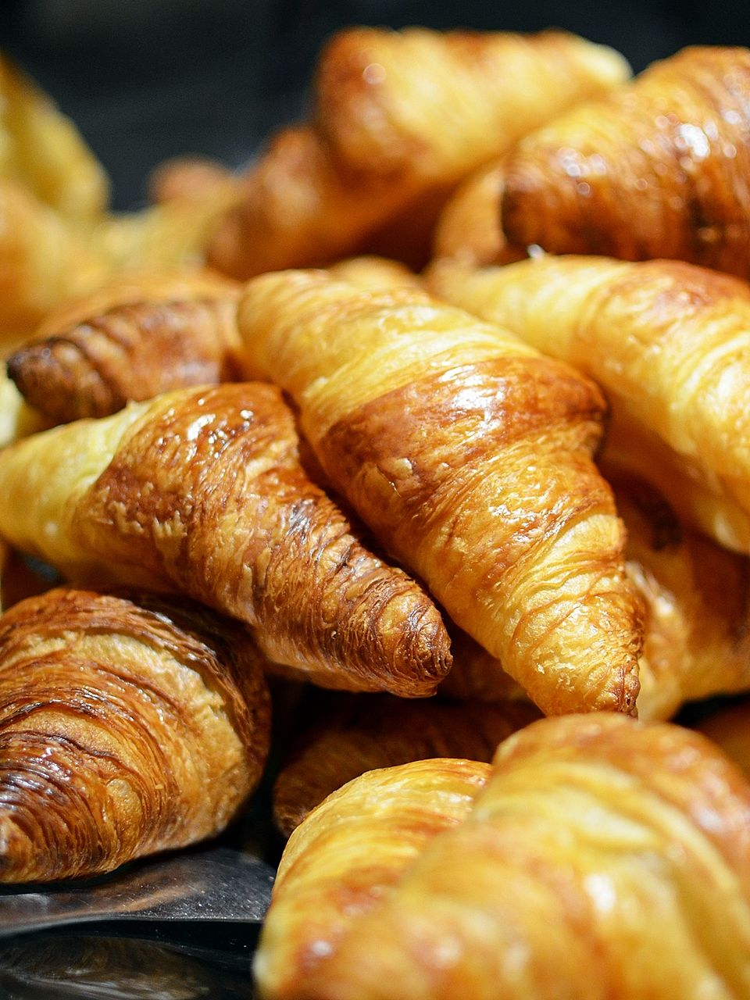

Laminated dough with 27 or 54 butter layers. The process: make a détrempe (enriched dough), encase a beurrage (butter block), then fold and roll three times using the "letter fold." Cold rest between folds is critical. Steam from butter layers causes dramatic puffing in the oven.
Up to 729 paper-thin layers created by 6 book folds. Uses no yeast — lift comes entirely from steam between butter layers. The dough must stay cold throughout; warm butter absorbs into dough rather than staying separate. Rough puff uses less precise folding for a quicker result.
Cooked on the stovetop, then eggs beaten in to create a glossy, pipeable paste. Steam from water content causes hollow centers — perfect for éclairs, profiteroles, and cream puffs. Cooking the panade (flour-water-butter base) gelatinizes starch, enabling it to absorb many eggs.
Fat coats flour particles before any water is added, limiting gluten development. Ratio: 2:1 flour to fat. "Short" means tender and crumbly — the opposite of chewy. Overworking activates gluten and toughens the crust. Resting in the fridge relaxes any developed gluten. Used for tarts and quiches.
Paper-thin unleavened sheets stretched until translucent. Each sheet is brushed with clarified butter or oil before layering. Used in baklava, spanakopita, börek. Commercial filo is made by machine; hand-stretching on a large table cloth is the traditional method. Dries out quickly — keep covered.
Yeast-leavened laminated dough — a hybrid of croissant technique and enriched dough. Softer and sweeter than croissant due to more sugar and sometimes milk in the détrempe. Typically filled with cream cheese, fruit, or almond paste. Fewer layers (16–27) than classic croissant.